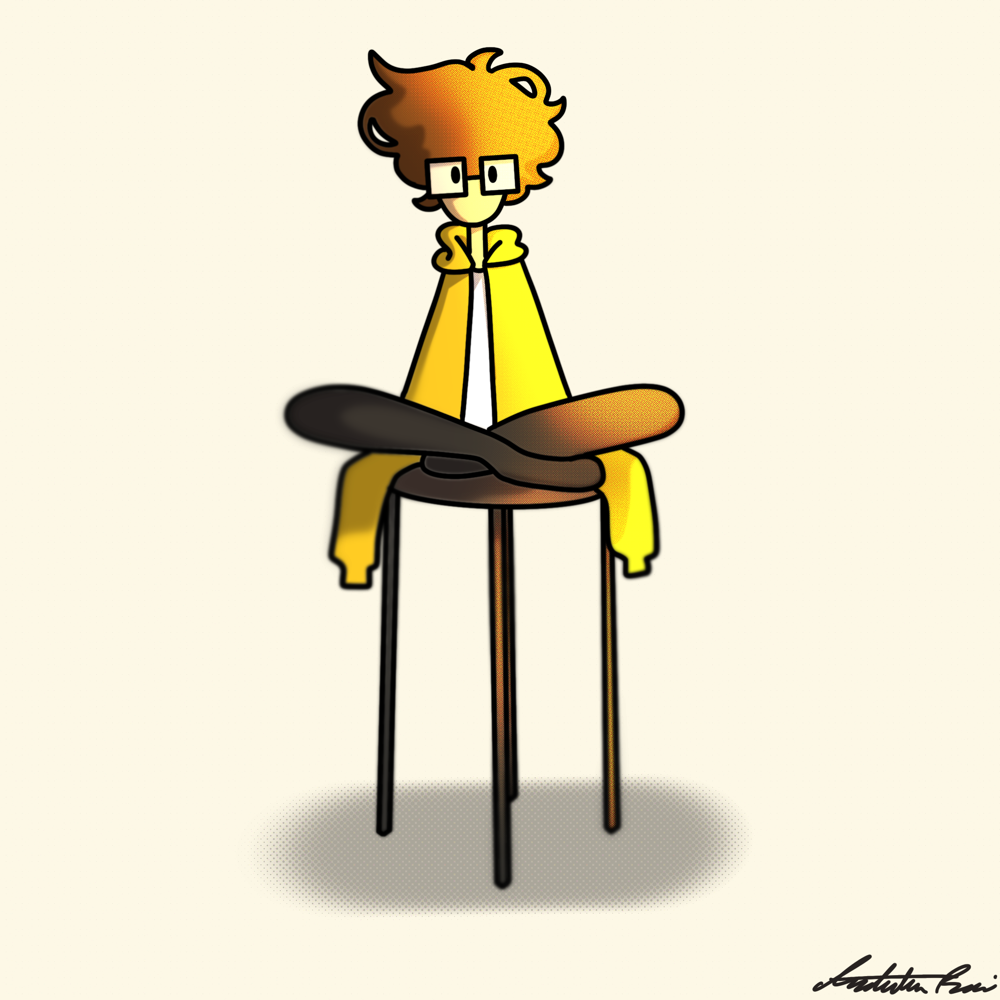

Artist Bio
Andylina Renzi is a multi-medium artist, living in Rhode Island with a focus in digital art. She has had work shown in many Wickford, North Kingstown and Warwick association professional art shows throughout high school, both in 3-D sculpture, and digital drawings. Pursuing an art career in Graphic Design, currently focused on logo, poster and 3-D works. Has skill in InDesign, Illustrator, and Photoshop, along with project mounting and making 3-D raps, boxes, booklets and T-shirts to show her Graphic Design work in practical use. Currently enrolled at Rhode Island College majoring in Graphic Design, working towards a bachelor's degree and learning the basics of Graphic Design, animation, web design and digital media. Granted scholarship through RIC entering freshmen art award for her Astronaut Walking a Dog one panel comic. Then awarded the Hope Scholarship with a 3.9 GPA and working as a full time student.